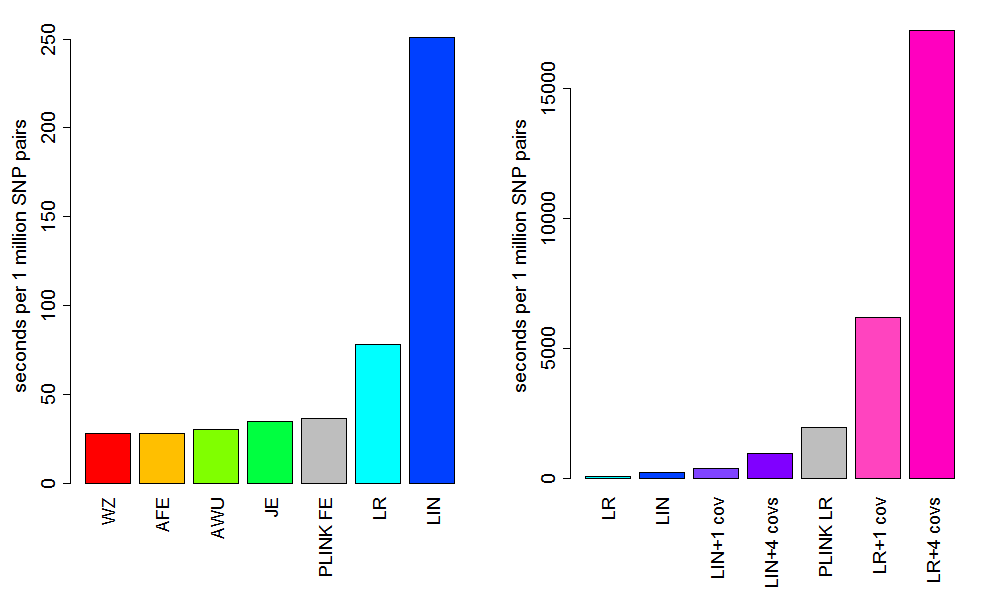

10 Filtering Multiple Tests
It is possible to simultaneously calculate more than one test in CASSI and to use the tests as screening steps if desired.
To use one test to screen for another one is easy with CASSI. There will be quite few options to give to CASSI, so the easiest thing to do will is to write a parameter file. For example, save the following as myparas.pf
#Set up input and output files
-i chromosome1.bed
-o myresults.dat
#Do logistic regression test as a screening step
-lr
-lr-th 0.001
#Do logistic regression test with 4 covariates
-lr
-lr-th 0.0001
-lr-covar covariates.dat
and then run CASSI as follows:
./cassi -pf myparas.pf
The above example uses logistic regression with a p-value threshold of 0.001 as a screening step for logistic regression with 4 covariates. The tests are ran in the order they appear in the parameter file or the command line. The output will look something like:
SNP1 CHR1 ID1 BP1 SNP2 CHR2 ID2 BP2 LR_LOG_OR LR_CHISQ LR_P LR_COVAR_LOG_OR LR_COVAR_CHISQ LR_COVAR_P
1 1 rs3825075 207140 1022 1 rs11039351 5842422 0.729394 15.2732 9.30269e-05 0.730193 15.2866 9.23706e-05
1 1 rs3825075 207140 1188 1 rs12794064 6674133 0.753422 14.7342 0.00012378 0.766574 15.2141 9.59825e-05
1 1 rs3825075 207140 1355 1 rs71037479 7211075 -0.56288 18.998 1.30857e-05 -0.567815 19.282 1.12763e-05
13 1 rs659804 244010 2703 1 rs10831905 12733043 2.43204 17.5586 2.78587e-05 2.45784 17.9211 2.30255e-05
13 1 rs659804 244010 2717 1 rs10500759 12779164 2.05542 15.5899 7.86735e-05 2.07359 15.9522 6.49639e-05
My test data of 3000 SNPs took about 7 minutes to calculate the 4,498,500 SNP pair tests, compared to about 22 hours without the screening step - and resulted in the same results. Nice. To speed things up further we can add another screening stage using the adjusted fast epistasis test:
#Set up input and output files
-i chromosome1.bed
-o myresults.dat
#Do the adjusted fast epistasis test as a screening step
-afe
-afe-th 0.2
#Do logistic regression test as a screening step
-lr
-lr-th 0.001
#Do logistic regression test with 4 covariates
-lr
-lr-th 0.0001
-lr-covar covariates.dat
The runtime for the above analysis took about 5 and a half minutes to analysis the same data set and resulted in the same results. Obviously, the smaller the p-value threshold that is set for a screening step the quicker the analysis will run, but setting it too small may result in missing some significant test results in the last test. A comparison of the runtimes of each test are shown in section 10.3 which may act as a guide as to which order to run the tests. The log file will show how many tests passed at each step and the log file for the above analysis looked like this:
CASSI: SNP interaction analysis software, v2.00
-----------------------------------------------
Copyright 2013 Richard Howey, GNU General Public License, v3
Institute of Genetic Medicine, Newcastle University
Parameters:
Input file: chromosome1.bed
Output file: myresults.dat
Log file: myresults.log
Start SNP of first SNP window: 1
End SNP of first window is the last SNP
Start SNP of second SNP window: 1
End SNP of second window is the last SNP
Maximum no. of results: 1000000
Filter: all statistic thresholds must pass
Data Summary Statistics:
Number of SNPs: 3000
Number of subjects: 2000
Number of cases: 1000 (50%)
Number of controls: 1000 (50%)
Number of missing: 0
Test Statistic: Adjusted Fast Epistasis
P-value threshold for case/control results: 0.2
P-value threshold for case only results: 0.2
Total SNP pairs calculated: 4498500
Total SNP pair statistics passing threshold: 1753516
Test Statistic: Logistic Regression
P-value threshold for case/control results: 0.001
Total SNP pairs calculated: 1753516
Total SNP pair statistics passing threshold: 4055
Test Statistic: Logistic Regression
Covariate file: covariates.dat (with missing value -9)
P-value threshold for case/control results: 0.0001
Total SNP pairs calculated: 4055
Total SNP pair statistics passing threshold: 461
Number of SNP pairs with results: 461
Run time: 5 minutes and 24 seconds
It can be seen that the first step reduces the number of tests to be performed by logistic regression by about 60 percent. The final step only tests about 0.09 percent of the original SNP pairs, speeding up the analysis considerably.
It is also possible to calculate a number of tests and report results whenever any of the p-value thresholds are passed. This is done with the -filter-any option. For example, using the following parameter file:
#Set up input and output files
-i chromosome1.bed
-o myresults.dat
#Set filter to allow any p-value threshold to be passed
-filter-any
#Do the adjusted fast epistasis test
-afe
-afe-th 1e-4
#Do Wellek Ziegler test
-wz
-wz-th 1e-5
will produce results where either the adjusted fast epistasis test gives a p-value less than 0.0001 or the Wellek Ziegler test gives a p-value less than 0.00001.
Every test will be evaluated when using the -filter-any option so the order of the tests in this case is not so important.
Figure 1 shows the relative runtimes for each of the tests in CASSI as well as the fast epistasis test in PLINK and the logistic regression epistasis test in PLINK. There is not too much difference in speed between the Wellek Ziegler (WZ) test, the adjusted fast epistatis (AFE) test, the adjusted Wu (AWU) test, the joint effects (JE) test and the fast epistasis (FE) test in PLINK. The AFE test is about 1.3 times quicker than the FE test in PLINK and 2.8 times quicker than logistic regression (LR). LR in CASSI is considerably faster than LR in PLINK, being about 25 times faster and is about 220 times faster than LR with 4 covariates. The AFE test is about 660 times faster than LR with 4 covariates.
The relative speeds of the test should act as a guide as to which order they should be calculated when calculating multiple tests at once. The best order will also depend on the thresholds used for each test and possibly the data.

Figure 1. Runtimes to calculate 1 million SNP pair tests for the different tests in CASSI, plus two tests from PLINK, based on 4,498,500 SNP pair calculations of all the SNP pairs between 3000 SNPs with 1000 cases and 1000 controls (using a threshold of 0.0001 to output results). The tests left to right are: Wellek Ziegler (WZ); adjusted fast epistatis (AFE); adjusted Wu (AWU); joint effects (JE); PLINK fast epistasis (PLINK FE); logistic regression (LR); linear regression (LIN); linear regression with 1 and 4 covariates (LIN+1 cov and LIN+4 covs); PLINK logistic regression (PLINK LR); logistic regression with 1 and 4 covariates (LR+1 cov and LR+4 covs). Timings are based on the 64 bit Linux versions (machine: 6-Core AMD Opteron TM Processor with 2.6 GHz CPUs).
{kind=link}